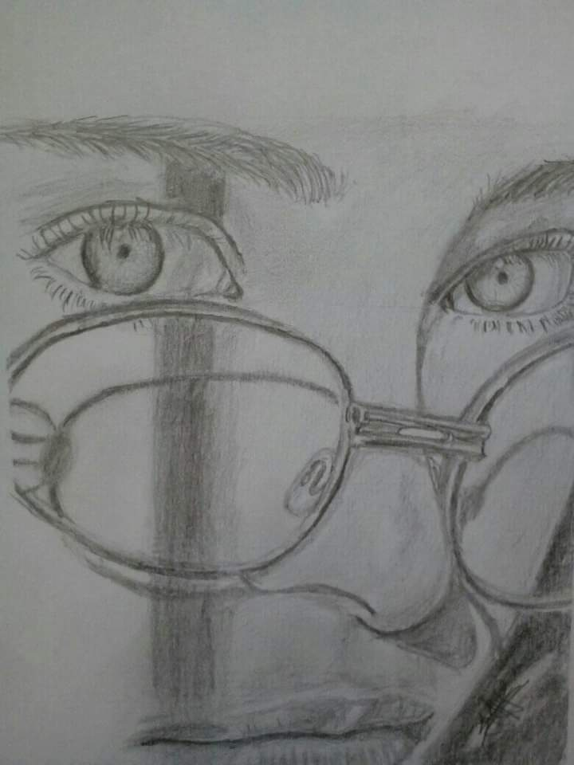
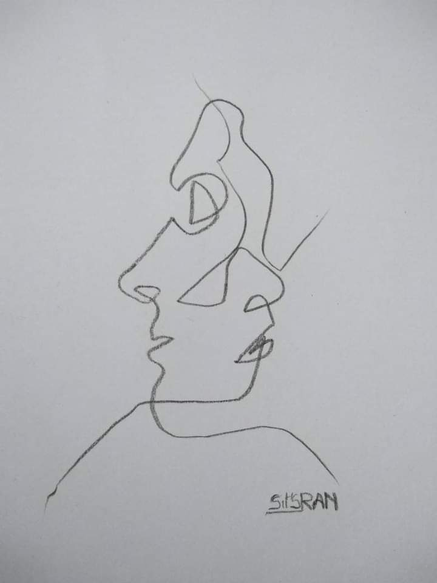

SitS RAN est un garcon talentueux. Son vrai nom c'est SITRAKINIAINA RANDRIANARINDRA mais il est bien connu par tout le monde avec son pseudo SitS RAN . Le jeune talentueux NEE EN 2006 et en classe de terminale S . Sa nationalite est MALAGASY .
SitS RAN est passionne sur le dessin du genre portrait realiste. Mais vous devriez rappeler que notre sujet a propos de lui concerne sur son oeuvre d'art
Voici quelques dessins de SitS RAN depuis l'année 2019-2021.
Izy ity zany dia sarin'i Albert Einstein izay olo malaza eran-tany . Nataoko ity sary ity satria nampiainga ny aingam-panahiko noho ny fahaizany. Teo ampanaovana ny enti mody aho no nanam-paniriana na hoe nofinofy ny mba tahaka ity ranamana iray ity ary izany indrindra no nampisy ny aingam-panahiko anao ny sariny . Somary elaela ihany no nanaovana azy satria dia natao tamin'ny fo tokoa mo izy ity ary nafoizana fotoana mihitsy aza. Anisany sary tiako indrindra izy ity satria ity no sary ela indrindra natoko. Sary tsy nampoizina hivoaka tahak izao izy fa noho ny fanaovana azy tamin ny fo sy ny fitiavana azy dia nivoaka tahak izao ary nanomboka teto izaho no tena liana tamin'ny atao hoe portrait ny taona 2021.
Sarin'i Aina Misandratra . Nanao vacance tany aminy izaho, ka rehefa nahita ireo asa tanako sasany izy dia akory mo ny fahatairany ka hoy izy hoe "elah dadolo ve no nanao an'ireo ? ", ka dia namaly azy moa izaho ka nanao hoe "eny" . Teo izy dia niteny tamiko hoe mba ataovy ihany koa ny sariny, izaho koa moa dia tsy nanda azy noho ny aingam-panahy tao anatiko ary dia teo noho eo aho dia nanao azy ity . Vita tao anatin'ny adin'ny 3 ora sy sasany (3h30min) teo ho eo izy ity .
SARY HAFA
|  |  |
|
|
|---|---|---|
Sarin'i Aina Misandratra . Nanao vacance tany aminy izaho, ka rehefa nahita ireo asa tanako sasany izy dia akory mo ny fahatairany ka hoy izy hoe "elah dadolo ve no nanao an'ireo ? ", ka dia namaly azy moa izaho ka nanao hoe "eny" . Teo izy dia niteny tamiko hoe mba ataovy ihany koa ny sariny, izaho koa moa dia tsy nanda azy noho ny aingam-panahy tao anatiko ary dia teo noho eo aho dia nanao azy ity . Vita tao anatin'ny adin'ny 3 ora sy sasany (3h30min) teo ho eo izy ity . |
Izy ity zany dia sarin'i Albert Einstein izay olo malaza eran-tany . Nataoko ity sary ity satria nampiainga ny aingam-panahiko noho ny fahaizany. Teo ampanaovana ny enti mody aho no nanam-paniriana na hoe nofinofy ny mba tahaka ity ranamana iray ity ary izany indrindra no nampisy ny aingam-panahiko anao ny sariny . Somary elaela ihany no nanaovana azy satria dia natao tamin'ny fo tokoa mo izy ity ary nafoizana fotoana mihitsy aza. Anisany sary tiako indrindra izy ity satria ity no sary ela indrindra natoko. Sary tsy nampoizina hivoaka tahak izao izy fa noho ny fanaovana azy tamin ny fo sy ny fitiavana azy dia nivoaka tahak izao ary nanomboka teto izaho no tena liana tamin'ny atao hoe portrait ny taona 2021. |
...
...
...
...